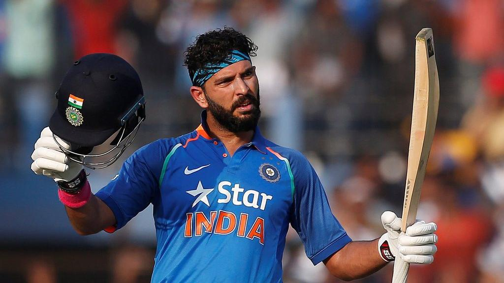

- HOME
Yuvraj Singh, The famous player of Indian International Cricket team born on 12
December 1981 in Chandigarh, India. Yuvraj Singh started his career of
sports with Roller Skating and Tennis. He was really good at skating which helped
him to win the National U-14 Roller Skating Championship as a 10-year-old.The
active kid got early popularity not just because of this but also for acting in 2 Punjabi
films named, Putt Sardara and Mehndi Sajna Di. He hailed from a school named “DAV
Public School” in Chandigarh which was also the school of KapilDev,the Great
Indian Cricket Legend.
He was sent to Mumbai by his father, a former Indian pacer, to train at theElf-Vengsarkar
Cricket Academy. His strenuous training and hard work paid off
when he was selected in the U-19 Punjab State Team. But this was not enough for
the 19-year-old. He worked day in day out to make it to the U-19 Indian cricket team.
His all-round performance at the ICC U-19 World Cup 2000 earned him the player
of the tournament award.
PERSONAL LIFE
Yuvraj Singh was born in a Sikh family to Yograj Singh, a former India cricketer, and
Shabnam Singh.Tennis and roller skating were Yuvraj's favourite sports during
his childhood and he was quite good at both. He had also won the National Under-14
Roller Skating Championship. His father threw away the medal and told him to
forget skating and concentrate on cricket.He would take Yuvraj to training every day.
|
 |
CANCER DIGNOUSES
 |
Yuvraj's cancer was detected by a Russian doctor in 2011.In March 2012, Yuvraj
was discharged from hospital after completing the third and final cycle of chemotherapy
and returned to India in April. After his chemotherapy sessions treating
seminoma in Indianapolis, Yuvraj's cancer showing full signs of remission, he
aimed at resuming cricket at the World Twenty20. The selectors picked Yuvraj to
be a part of the 15-member Indian squad for the 2012 ICC World Twenty20 in Sri
Lanka in September 2012.
|
RETIREMENT FROM INTERNATIONAL CRICKET
|
On 10 June 2019, Yuvraj Singh announced his retirement from international cricket . Yuvraj Singh held a press conference in Mumbai where he announced his decision to hang his boots from all formats of the game. He said that he has Decided to "Move On".Yuvraj recounted his best memories through his career, while also spelling out his worst. "I would say I am extremely lucky to play 400-plus games for India. I would've not imagined doing this when I started my career in cricket. Through this journey, some matches that remain in my memory are - the 2002 NatWest series final, my first Test hundred in Lahore in 2004, the 2007 Test series in England, of course the six sixes and the 2007 T20 World Cup. And then the most memorable one was the 2011 World Cup finals." |
POLICE MODERN SCHOOL.
{kind=link}